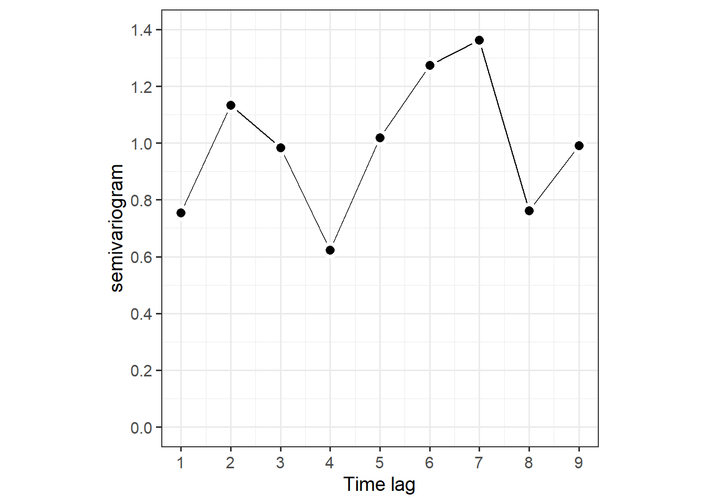

2 Time series and GLS
本章では、時系列データに対して用いることができる回帰モデルについて解説する。
2.1 Ospreys
Steidl et al. (1991) は、ミサゴの卵の厚さが殺虫剤の崩壊産物(DDD)によって変わるかを調べ、有意な関連を見つけた。本節ではこのデータを用いる。
2.2 Covariance and correlation coefficients
DDDと卵の殻の厚さの関連は以下の通り。
osp %>%
ggplot(aes(x = DDD, y = THICK))+
geom_point(shape = 1, size = 2)+
theme_bw()+
theme(aspect.ratio=1)
相関係数は-0.42である。
## [1] -0.41956922.3 Linear regression models
以下のモデルを考える。
\[ \begin{aligned} Thichness_i &= \beta_1 + \beta_2 \times DDD_i + \epsilon_i \\ \epsilon_i &\sim N(0, \sigma^2) \end{aligned} \]
Rでは以下のように実行する。
2.4 Focusing on the residual covariance matrix
残差\(\epsilon_i\)は行列式で以下のように書ける。なお、\(\bf{I}\)は単位行列である。
\[
\bf{\epsilon} \sim N(0, \bf{\sigma^2} \times \mathbf{I})
\]
より一般的に、残差\(\epsilon_i\)は以下のように書ける。\(\bf{\Sigma}\)は分散共分散行列と呼ばれる。
\[
\bf{\epsilon} \sim N(0, \bf{\Sigma})
\]
通常の線形回帰モデルでは、\(\bf{\Sigma}\)は以下のようになる。ここで、\(sigma^2\)に単位行列を書けるということは、残差間が独立であることを仮定していることになる。例えば、1行2列目は\(\epsilon_1\)と\(\epsilon_2\)の共分散を表すが、単位行列ではこれが0になる。同様に、単位行列は対角成分以外が全て0になるので、異なる残差同士の共分散が全て0になると仮定していることになる。
\[
\bf{\Sigma} = \sigma^2 \times \mathbf{I}
\]
より一般的には、分散共分散行列\(\bf{\Sigma}\)は以下のように書ける。これは対称行列である。\(\phi_{i,j}\)は\(\epsilon_i\)と\(\epsilon_j\)の共分散である。通常の回帰分析ではこれらが全て0と仮定された。共分散が０以外の値をとる場合、異なる残差は独立ではなくなる。
\[ \bf{\Sigma} = \begin{pmatrix} \sigma^2 & \phi_{1,2} & \phi_{1,3} & \phi_{1,4} & \cdots &\phi_{1,25} \\ & \sigma^2 & \phi_{2,3} & \phi_{2,4} & \cdots& \phi_{2,25}\\ & & \sigma^2 & \phi_{3,4} & \cdots & \phi_{3,25} \\ & & & \sigma^2 & \ddots & \vdots \\ & & & & \sigma^2 & \phi_{24,25}\\ & & & & & \sigma^2 \end{pmatrix} \tag{2.1} \]
2.5 Dependency and the covariance matrix
ここで、回帰モデルにおける分散共分散行列の役割について理解するためにシミュレーションを行う。変数\(z_1\)と\(z_2\)が以下に従って1000個ずつ得られるとする。
\[ \begin{aligned} z_1 &\sim N(10,1)\\ z_2 &\sim N(15,1) \end{aligned} \]
Rでは以下のように得る。
MASSパッケージのmvrnorm関数を用い、多変量正規分布から同様に値を行列として得ることもできる。
sigma <- diag(2)
Z <- mvrnorm(1000,
mu = c(10, 15),
Sigma = sigma) %>%
data.frame() %>%
rename(z1 = 1, z2 = 2)このとき、\(z_1\)と\(z_2\)は行列を用いると以下のように多変量正規分布から得られていると書くことができる。これは、平均がそれぞれ10と15で、分散共分散行列\(\bf{\Sigma}\)が単位行列の多変量正規分布から値が得られたことを示す。
\[
\begin{pmatrix}
z_1 \\
z_2
\end{pmatrix} =
N \Bigl(
\begin{pmatrix}
10 \\
15
\end{pmatrix},
\begin{pmatrix}
1 & 0 \\
0 & 1 \\
\end{pmatrix}
\Bigl)
\]
得られたデータをプロットして分かるように、分散共分散行列が単位行列であり、\(z_1\)と\(z_2\)の間の共分散はゼロとなっているため、これらに相関が全くないことが分かる。
Z %>%
ggplot(aes(x = z1, y = z2))+
geom_point(shape = 1, size = 2)+
theme_bw()+
theme(aspect.ratio = 1)
今度は、\(z_1\)と\(z_2\)が正の相関を持つような場合を考える。このようなときは、以下のように\(\bf{\Sigma}\)の\(\phi\)成分を0でなく正の値にしてやればよい(ここでは0.9)。分散を1にしているので、この値はそのまま相関係数になる。
## [,1] [,2]
## [1,] 1.0 0.9
## [2,] 0.9 1.0実際に得られた値をプロットしても、\(z_1\)と\(z_2\)が強い相関を持つことが分かる。このように、\(\bf{Sigma}\)の非対角成分に0以外の値を割り当てることで、多変量正規分布から得られる値が非独立であることを表現できる。
2.6 Dealing with temporal dependency
同様に、時系列データに対しても、残差の分散共分散行列の非対角成分\(\phi_{i,j}\)を0以外の値にすることで、データの非独立性に対処することができる。そのような方法の一つがGLS(Generalized least square)と呼ばれる方法である。
2.6.1 Adelie penguins
ここでは、 Barbraud and Weimerskirch (2006) が南極の海鳥が到着する日と産卵日について調査したデータを用いる。ここでは、特に産卵日について着目する。
データは以下の通り。各年について1つのデータがある。
bird <- read_csv("data/Phenology_Data_Antarcticbirds_AFZ1.csv")
datatable(bird,
options = list(scrollX = 20),
filter = "top")分析では、海氷面積によって産卵日に違いが出るかを調べる。海氷面積の直接的なデータはないので、その近似として海中のメタルスルホン酸(MSA: 海氷が多いと多くなる)を用いる。
産卵日の年変動と、MSAと産卵日の関係は以下のようになる。
2.6.2 Do we have dependency?
産卵日に影響する様々な要因(成熟したメスの数、病気の流行、ホルモンレベル)などは年ごとに独立ではなく、t年のデータがt+1年のデータに影響を及ぼしていると考えられる。よって、各年の産卵日は独立ではないと考えられる。
2.6.3 Formulation of the linear regression model
まずは時系列を考慮しない通常の線形回帰モデルを適用する。モデル式は以下の通り。
\[ \begin{aligned} LD_t &= \beta_1 + \beta_2 \times MSA_t + \epsilon_t \\ \epsilon_t &\sim N(0,\sigma^2) \end{aligned} \]
2.6.4 Application of the linear regression model
Rでは以下のように実行する。ここでは、nlmeパッケージのgls関数を用いる(もちろん、lm関数でも実行できる)。
結果は以下の通り。MSAの効果は弱いことが分かる。
## Generalized least squares fit by REML
## Model: LayingAP ~ MSA
## Data: bird
## AIC BIC logLik
## 139.7118 144.0137 -66.85588
##
## Coefficients:
## Value Std.Error t-value p-value
## (Intercept) 247.91825 1.25111 198.15867 0.0000
## MSA -33.01513 16.42976 -2.00947 0.0533
##
## Correlation:
## (Intr)
## MSA -0.956
##
## Standardized residuals:
## Min Q1 Med Q3 Max
## -1.5831272 -0.5845941 -0.1200808 0.5813974 1.9238887
##
## Residual standard error: 2.111689
## Degrees of freedom: 33 total; 31 residualモデルの標準化残差と予測値、MSAとの関連をプロットしたのが以下の図である。数字は観察年の下２桁を表す。明確なパターンは見当たらない。しかし、よく見てみると観察年が近いと似た残差をとる傾向があるように思える。例えば、60年代のデータは全て残差が負の値になっている。
data.frame(resid = resid(m3_2a, type = "n"),
Year = bird %>% drop_na(LayingAP, MSA) %>% .$Year,
fitted = predict(m3_2a),
MSA = bird %>% drop_na(LayingAP, MSA) %>% .$Year) %>%
mutate(Year2 = str_sub(Year, 3,4)) -> fitted_m3_2a
fitted_m3_2a %>%
ggplot(aes(x = fitted, y = resid))+
geom_point(shape = 1, size = 2)+
geom_text_repel(aes(label = Year2))+
geom_hline(yintercept = 0, linetype = "dashed")+
theme_bw(base_size = 14)+
theme(aspect.ratio = 1) -> p1
fitted_m3_2a %>%
ggplot(aes(x = MSA, y = resid))+
geom_point(shape = 1, size = 2)+
geom_text_repel(aes(label = Year2))+
geom_hline(yintercept = 0, linetype = "dashed")+
theme_bw(base_size = 14)+
theme(aspect.ratio = 1) -> p2
p1 + p2自己相関関数をプロットしてみると、あまり明確にはわからないが有意に自己相関が高いところがあることが分かる。
resid <- rep(NA, nrow(bird))
i <- !is.na(bird$LayingAP) & !is.na(bird$MSA)
resid[i] <- resid(m3_2a, type = "n")
acf <- acf(resid,
lag.max = 20,
na.action = na.pass,
plot = FALSE)
data.frame(lag = 0:20,
acf = acf$acf,
SE = qnorm(0.975)/sqrt(acf$n.used)) %>%
ggplot(aes(x = lag, y = 0))+
geom_segment(aes(xend = lag, yend = acf))+
geom_hline(aes(yintercept = -SE),
linetype = "dashed",
color = "navy")+
geom_hline(aes(yintercept = SE),
linetype = "dashed",
color = "navy")+
theme_bw()+
labs(y = "acf")+
theme(aspect.ratio = 1)+
scale_x_continuous(breaks = seq(0,20,1))
欠損値が多いので、バリオグラムで見た方が適切かもしれない。バリオグラムは以下のようになる。バリオグラムは水平にならず、やはり残差に時間的な相関があることが示唆される。
vario_3_2a <- data.frame(resid = resid,
Year = bird$Year,
zero = 0) %>%
drop_na()
sp::coordinates(vario_3_2a) <- c("Year", "zero")
vario_3_2a %>%
variogram(resid ~ 1, data = .,
cutoff = 9,
width = 1) %>%
ggplot(aes(x = dist, y = gamma))+
geom_line()+
geom_point(size = 3,
shape = 21,
fill = "black",
color = "white",
stroke = 2)+
theme_bw(base_size = 14)+
theme(aspect.ratio = 1)+
labs(y = "semivariogram", x = "Time lag")+
coord_cartesian(ylim = c(0,1.4))+
scale_x_continuous(breaks = seq(1,9,1))+
scale_y_continuous(breaks = seq(0,1.4,0.2))
こうした時系列相関が問題になりうるかを判断するためには、時系列相関を考慮したモデルを作成し、それを考慮しないモデルと比較する必要がある。
2.6.5 Formulation of the GLS model
通常の回帰モデルでは異なる残差同士が独立(相関が0)なので、以下のように書くことができる。
\[ \begin{aligned} LD_t &= \beta_1 + \beta_2 \times MSA_t + \epsilon_t \\ \epsilon_t &\sim N(0,\sigma^2)\\ cor(\epsilon_t, \epsilon_s) &= \begin{cases} 0 \; \bf{if} \;t \neq s \\ 1 \; \bf{if} \;t = s \end{cases} \end{aligned} \]
これまでに見てきたように、時系列相関を考慮するためには異なる残差同士の相関が0でないと仮定すればよい。これは、以下のように書ける。なお、\(h()\)は残差同士の相関を決める関数で\(\phi\)はその関数におけるパラメータである。
\[
\begin{aligned}
LD_t &= \beta_1 + \beta_2 \times MSA_t + \epsilon_t \\
\epsilon_t &\sim N(0,\sigma^2)\\
cor(\epsilon_t, \epsilon_s) &= h(\phi, \epsilon_t, \epsilon_s)
\end{aligned}
\]
時系列相関を考慮したモデルでは、この\(h()\)に様々な関数を想定することで、データの非独立性に対応する。最も一般的なものは、AR1過程と呼ばれるもので、以下のように書ける。なお、\(\phi\)は0から1の値をとる。
\[ \begin{aligned} \epsilon_t &= \phi \times \epsilon_{t-1} + \nu_t \\ \nu_t &\sim N(0, \sigma_\nu^2) \end{aligned} \]
関数\(h()\)は以下のように書ける。このとき、残差は定常性を持つといわれる。これは、残差の共分散は時間差のみに依存しているということである。
\[
h(\phi, \epsilon_t, \epsilon_s) = \phi^{|t-s|}
\]
AR1で残差の分散共分散行列\(\bf{\Sigma}\)は以下のように書ける。行列中のパラメータは$$1つなので、これさえ推定できれば良い。
\[ \bf{\Sigma} = cov(\bf{\epsilon}) = \frac{\sigma_{\nu}^2}{1-\phi^2} \times \begin{pmatrix} 1 & \phi & \phi^2 & \phi^3 & \cdots & \phi^{54} \\ \phi & 1 & \phi & \phi^2 & \ddots & \vdots\\ \phi^2 & \phi & \ddots & \ddots & \ddots & \phi^3 \\ \phi^3 & \phi^2 & \ddots & \ddots & \ddots & \phi^2 \\ \vdots & \ddots & \ddots & \phi & 1 & \phi \\ \phi^{54} & \cdots & \phi^2 & \phi^2 & \phi & 1 \end{pmatrix} \]
相関行列は以下のように書ける。
\[
cor(\bf{\epsilon}) =
\begin{pmatrix}
1 & \phi & \phi^2 & \phi^3 & \cdots & \phi^{54} \\
\phi & 1 & \phi & \phi^2 & \ddots & \vdots\\
\phi^2 & \phi & \ddots & \ddots & \ddots & \phi^3 \\
\phi^3 & \phi^2 & \ddots & \ddots & \ddots & \phi^2 \\
\vdots & \ddots & \ddots & \phi & 1 & \phi \\
\phi^{54} & \cdots & \phi^3 & \phi^2 & \phi & 1
\end{pmatrix}
\]
AR1では、回帰係数の推定値とその分散共分散行列は以下のようになる。
\[
\begin{aligned}
\bf{\hat{\beta}} &= (\bf{X^t} \times \bf{\Sigma^{-1}} \times \bf{X})^{-1} \times \bf{X^t} \times \bf{\Sigma^{-1}} \times \bf{y}\\
cov(\hat{\beta}) &= (\bf{X^t} \times \bf{\Sigma^{-1}} \times \bf{X})^{-1}
\end{aligned}
\]
AR1過程モデルの代わりに、残差が他の相関構造をもつものを仮定することもできる。例えば、交換可能(exchangable)な相関を持つ場合、相関行列は以下のように書ける。これは、時間差に依らず全ての異なる残差が同じ相関\(\phi\)を持つことを仮定している。これは、短い時系列を持つデータに対しては有効である場合がある。
\[ cor(\bf{\epsilon}) = \begin{pmatrix} 1 & \phi & \phi & \phi & \cdots & \phi \\ \phi & 1 & \phi & \phi & \ddots & \vdots\\ \phi & \phi & \ddots & \ddots & \ddots & \phi\\ \phi & \phi & \ddots & \ddots & \ddots & \phi\\ \vdots & \ddots & \ddots & \phi & 1 & \phi \\ \phi & \cdots & \phi & \phi & \phi & 1 \\ \end{pmatrix} \]
2.6.6 Implementation using the gls function
AR1モデルのGLSのモデル式を書くと以下のようになる。
\[ \begin{aligned} LD_t &= \beta_1 + \beta_2 \times MSA_t + \epsilon_t \\ \epsilon_t &\sim N(0,\sigma^2)\\ cor(\epsilon_t, \epsilon_s) &= \phi^{|t-s|} \end{aligned} \]
Rでは以下のように実行できる。gls関数では、correlation =オプションで様々な残差の相関構造をモデリングできる。例えば、交換可能な相関の場合は、correlation = corCompSymm()とする。
結果は以下の通り。推定された\(phi\)は0.523である。驚くべきことに、時系列相関を考慮しない場合にはMSAの係数が負の値だったのに対して、今回は正の値になっている。
## Generalized least squares fit by REML
## Model: LayingAP ~ MSA
## Data: bird
## AIC BIC logLik
## 138.8594 144.5953 -65.42968
##
## Correlation Structure: ARMA(1,0)
## Formula: ~Year
## Parameter estimate(s):
## Phi1
## 0.5236874
##
## Coefficients:
## Value Std.Error t-value p-value
## (Intercept) 244.57591 1.443356 169.44949 0.000
## MSA 10.33068 17.311974 0.59674 0.555
##
## Correlation:
## (Intr)
## MSA -0.896
##
## Standardized residuals:
## Min Q1 Med Q3 Max
## -1.5300255 -0.6243847 -0.0438220 0.7957452 2.0484887
##
## Residual standard error: 2.345265
## Degrees of freedom: 33 total; 31 residualモデルの予測値を図示したのが下図である。AR1モデルでは傾きが正になり、MSAと産卵日の関連はより小さなものと推定されている。
nd <- data.frame(MSA =seq(0.03,0.14,length = 100))
data.frame(m3_2a = predict(m3_2a, newdata = nd),
m3_2b = predict(m3_2b, newdata = nd),
MSA = nd$MSA) %>%
pivot_longer(cols = 1:2,
names_to = "model",
values_to = "fitted") %>%
ggplot(aes(x = MSA, y = fitted))+
geom_line(aes(color = model),
linewidth = 1)+
geom_text(aes(label = str_sub(bird$Year, 3,4), y = LayingAP),
data = bird)+
theme_bw()+
theme(aspect.ratio = 0.9)+
scale_color_nejm()+
labs(y = "Laying date")
AICを比較しても、AR1モデルの方がわずかに予測がよいことが分かる。
2.7 Multiple time series
第1.3節でみた積雪量と雪下温度の関連を調べた Petty et al. (2015) のデータについてもう一度考える。式@ref(eq:m2.4)のモデルでは、各時系列の残差が自己相関を持っていた。そこで、以下のモデルを考える(回帰係数は省略)。
\[ \begin{aligned} &T_{it} = \alpha + f_j(date\_num_t) + Type_i + a_i + \epsilon_{it}\\ &a_i \sim N(0, \sigma_{Logger}^2)\\ &\epsilon_{it} \sim N(0, \sigma^2)\\ &cor(\epsilon_{it}, \epsilon_{is}) = \phi^{|t-s|} \end{aligned} (\#eq:m3.3) \]
Rでは、以下のように実行できる。ランダム切片を含む場合、自己相関は自動的にそれぞれのロガーに対して適用されるため、correlation = corAR1(form =~date_num)としても同じ結果が得られる。Rのgamm関数では全てのロガーについて同じ\(\phi\)しか推定できない。
m3_3 <- gamm(Temp ~ s(date_num, by = Type) + Type,
random = list(Logger =~ 1),
correlation = corAR1(form = ~date_num|Logger),
data = sn2 %>% mutate(Type = as.factor(Type)))例えば、ロガー1の残差の相関行列は以下のように書ける。
\[
\bf{\Sigma_1} = cor
\begin{pmatrix}
\epsilon_{1,1}\\
\epsilon_{1,2}\\
\vdots\\
\epsilon_{1,88}\\
\epsilon_{1,89}
\end{pmatrix} =
\begin{pmatrix}
1 & \phi & \phi^2 & \phi^3 & \cdots & \phi^{89} \\
\phi & 1 & \phi & \phi^2 & \ddots & \vdots\\
\phi^2 & \phi & \ddots & \ddots & \ddots & \phi^3 \\
\phi^3 & \phi^2 & \ddots & \ddots & \ddots & \phi^2 \\
\vdots & \ddots & \ddots & \phi & 1 & \phi \\
\phi^{89} & \cdots & \phi^3 & \phi^2 & \phi & 1
\end{pmatrix}
\]
gamm関数で推定した場合、全てのロガーで同じ\(\phi\)が推定されるので、どのロガーの残差の相関行列も\(\bf{\Sigma_1}\)となる。よって、すべてのロガーの残差の相関行列は以下のように書ける。対角成分以外が0なのは、異なるロガーの残差の相関は0である(= 独立である)ことを表している。
\[ \begin{aligned} cor \begin{pmatrix} \begin{pmatrix} \epsilon_{1,1}\\ \vdots\\ \epsilon_{1,89} \end{pmatrix}\\ \begin{pmatrix} \epsilon_{2,1}\\ \vdots\\ \epsilon_{2,89} \end{pmatrix}\\ \vdots \\ \begin{pmatrix} \epsilon_{12,1}\\ \vdots\\ \epsilon_{12,89} \end{pmatrix} \end{pmatrix} = \begin{pmatrix} \bf{\Sigma_1} & 0 & \cdots & 0\\ 0 & \bf{\Sigma_2} & \cdots & 0\\ \vdots & \vdots & \ddots & \vdots \\ 0 & 0 & \cdots & \bf{\Sigma_{12}} \\ \end{pmatrix} = \begin{pmatrix} \bf{\Sigma_1} & 0 & \cdots & 0\\ 0 & \bf{\Sigma_1} & \cdots & 0\\ \vdots & \vdots & \ddots & \vdots \\ 0 & 0 & \cdots & \bf{\Sigma_{1}} \\ \end{pmatrix} \end{aligned} \]
結果は以下の通り。\(\phi\)は0.504と推定されている。
## Linear mixed-effects model fit by maximum likelihood
## Data: strip.offset(mf)
## AIC BIC logLik
## 2587.526 2645.432 -1281.763
##
## Random effects:
## Formula: ~Xr - 1 | g
## Structure: pdIdnot
## Xr1 Xr2 Xr3 Xr4 Xr5 Xr6 Xr7 Xr8
## StdDev: 16.80172 16.80172 16.80172 16.80172 16.80172 16.80172 16.80172 16.80172
##
## Formula: ~Xr.0 - 1 | g.0 %in% g
## Structure: pdIdnot
## Xr.01 Xr.02 Xr.03 Xr.04 Xr.05 Xr.06 Xr.07 Xr.08
## StdDev: 12.99064 12.99064 12.99064 12.99064 12.99064 12.99064 12.99064 12.99064
##
## Formula: ~Xr.1 - 1 | g.1 %in% g.0 %in% g
## Structure: pdIdnot
## Xr.11 Xr.12 Xr.13 Xr.14 Xr.15 Xr.16 Xr.17 Xr.18
## StdDev: 10.23867 10.23867 10.23867 10.23867 10.23867 10.23867 10.23867 10.23867
##
## Formula: ~1 | Logger %in% g.1 %in% g.0 %in% g
## (Intercept) Residual
## StdDev: 0.2900993 1.070964
##
## Correlation Structure: ARMA(1,0)
## Formula: ~date_num | g/g.0/g.1/Logger
## Parameter estimate(s):
## Phi1
## 0.5039287
## Fixed effects: y ~ X - 1
## Value Std.Error DF t-value p-value
## X(Intercept) -1.7091286 0.1769862 906 -9.656845 0.0000
## XTypeDeciduous -0.1055758 0.2601888 9 -0.405766 0.6944
## XTypePrairie 0.5034402 0.2537067 9 1.984339 0.0785
## Xs(date_num):TypeConiferousFx1 -1.2565046 1.4583432 906 -0.861597 0.3891
## Xs(date_num):TypeDeciduousFx1 3.0138336 1.7648757 906 1.707675 0.0880
## Xs(date_num):TypePrairieFx1 0.4391241 1.4170564 906 0.309885 0.7567
## Correlation:
## X(Int) XTypDc XTypPr X(_):TC X(_):TD
## XTypeDeciduous -0.680
## XTypePrairie -0.698 0.475
## Xs(date_num):TypeConiferousFx1 0.006 -0.004 -0.004
## Xs(date_num):TypeDeciduousFx1 0.000 -0.004 0.000 0.000
## Xs(date_num):TypePrairieFx1 0.000 0.000 0.001 0.000 0.000
##
## Standardized Within-Group Residuals:
## Min Q1 Med Q3 Max
## -5.4057668 -0.4121370 0.1026576 0.5351727 2.4662264
##
## Number of Observations: 921
## Number of Groups:
## g g.0 %in% g
## 1 1
## g.1 %in% g.0 %in% g Logger %in% g.1 %in% g.0 %in% g
## 1 12最後に、モデルの残差の自己相関関数(acf)を図示する。
sn2 %>%
mutate(resid = resid(m3_3$lme, type = "n")) %>%
group_by(Logger) %>%
arrange(date_num, .by_group = TRUE) -> sn3
Loggerid <- unique(sn3$Logger)
all.out <- NULL
for(i in seq_along(Loggerid)){
data <- sn3 %>% filter(Logger == Loggerid[i])
## 各ロガーについて時系列相関を算出
out.acf <- acf(data$resid,
lag.max = 15,
plot = FALSE)
## 出力をデータフレームに
out.df <- data.frame(Timelag = out.acf$lag,
Acf = out.acf$acf,
SE = qnorm(0.975)/sqrt(out.acf$n.used),
ID = Loggerid[i])
## 全て結合
all.out <- bind_rows(all.out, out.df)
}図示したのが下図である。図からは、依然として多くのロガーでは時系列相関があることが分かる。よって、単にAR1モデルを適用するだけでは問題は解決できていない。
all.out %>%
ggplot(aes(x = Timelag, y = 0))+
geom_segment(aes(xend = Timelag, yend = Acf))+
geom_ribbon(aes(ymax = SE, ymin = -SE),
alpha = 0.3)+
theme_bw()+
theme(aspect.ratio = 0.8)+
facet_rep_wrap(~ID, repeat.tick.labels = TRUE)+
labs(y = "Auto-correlation")
また、他の問題としてGAMMに時間のsmootherとAR1過程の両方が含まれている場合、これらが競合してしまう場合があることもある。この場合、どちらかのみを適用した方がよい。